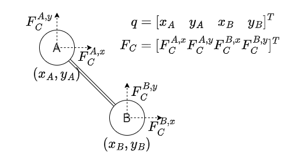

Think about a constrained particle system(rigid body system is just a constrained particle system).
Use q for the position vector of the whole system.
And the constraint is just a function: C(q)=0.
Condition 1
Constraint C=0 should be kept at all the time.
If we assume C∣t=0=0,C˙∣t=0=0, then all we need is to make sure:
C¨(t)=0,∀t
Condtion 2
Constraint force FC should not do work.
Let δq be some small delta for q which keep C=0:
C(q)=0⇒C(q+δq)=0
Then to make constraint force FC don't do any work under δq, it should be perpendicular with δq:
FC⊥δq
For the arbitraryness of δq, FC must be parallel with the normal vector of the surface C(q)=0:
FC=∇CTλ
where ∇C=∂q∂C is the Jacobian of C about q.
Motion Equation
By Newton's second law of motion F=am, we have:
FC+FE=Ma
where
- FC is constraint force
- FE is external force
- M is the mass matrix
- a is the acceleration
System to solve
Now combine Condition 1&2 and the motion equation, we have:
⎩⎨⎧C¨(t)=0,∀tFC=∇CTλFC+FE=Ma
where FC,λ,a are unknowns.
If q is n-dim and C is m-dim, then:
- Condition 1 provides m equations
- Condition 2 provides n equations
- Motion Equation provides n equations
- FC,λ,a have n+m+n unknowns
So the system has an unique solution (if exists).
Example

Notations are shown in the above figure.
Let the constraint be
C(t)=⎣⎡xAyA(xB−xA,yB−yA)2−2⎦⎤=0
Let the external force be
FE=⎣⎢⎢⎡0−g0−g⎦⎥⎥⎤
where g is the gravitational constant.
Let mass be
M=⎣⎢⎢⎢⎢⎡mA0000mA0000mB0000mB⎦⎥⎥⎥⎥⎤
where mA,mB are the mass of A and B.
Put these into the system above(repeated here for convenience):
⎩⎨⎧C¨(t)=0FC=∇CTλFC+FE=Ma
where let qB=(xB,yB),qA=(xA,yA), we have:
C¨(t)=[aA2(vB−vA)2+2(qB−qA)⋅(aB−aA)]
∇CT=⎣⎡102xA−2xB012yA−2yB00−2xA+2xB00−2yA+2yB⎦⎤
And if we assume
qA=(0,0)qB=(1,−1)vA=(0,0)vB=(0,0)mA=1mB=1
After solving the system equations, the solution is:
λ=⎣⎢⎢⎢⎢⎢⎡−2g23g−4g⎦⎥⎥⎥⎥⎥⎤FC=⎣⎢⎢⎢⎢⎢⎢⎡0g−2g2g⎦⎥⎥⎥⎥⎥⎥⎤a=⎣⎢⎢⎢⎢⎢⎢⎡00−2g−2g⎦⎥⎥⎥⎥⎥⎥⎤
If we leave q and v be variables, we can get the solution for a (very complex, maybe in vector form will be better):
aBx=xA2−2xAxB+xB2+yA2−2yAyB+yB2gxAyA−gxAyB−gxByA+gxByB+(vA1)2xA−(vA1)2xB−2vA1vB1xA+2vA1vB1xB+(vA2)2xA−(vA2)2xB−2vA2vB2xA+2vA2vB2xB+(vB1)2xA−(vB1)2xB+(vB2)2xA−(vB2)2xB
aBy=xA2−2xAxB+xB2+yA2−2yAyB+yB2−gxA2+2gxAxB−gxB2+(vA1)2yA−(vA1)2yB−2vA1vB1yA+2vA1vB1yB+(vA2)2yA−(vA2)2yB−2vA2vB2yA+2vA2vB2yB+(vB1)2yA−(vB1)2yB+(vB2)2yA−(vB2)2yB